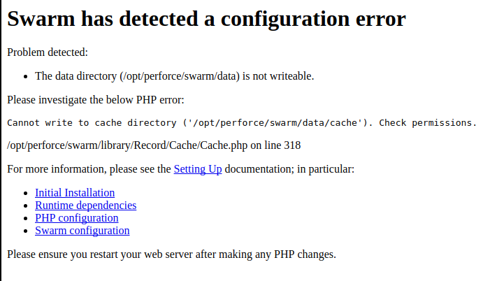

|

|
In order to successfully install, configure, and deploy Swarm, the following dependencies are required:
mod_rewrite and mod_php5A supported version of PHP with the following extensions:
In addition, Swarm greatly benefits from the following optional extensions:
A supported Helix Versioning Engine deployment, and the ability to connect to it from the system hosting Swarm.
"Helix server deployment" can refer to a running p4d or a proxy, replica, edge server, or commit server.
curl or wget (for Swarm worker operation)Optional dependencies:
zip, the command-line archiving tool (for downloading archives of files/foldersBecause Swarm includes binary versions of P4PHP (the Perforce extension for PHP), we support Swarm on the following operating systems:
You may be able to get Swarm running on another platform if you build P4PHP yourself and satisfy the other runtime dependencies. Instructions on how to obtain and build P4PHP from source can be found here.
P4PHP does not support threaded operation. If you compile P4PHP from source, ensure that the version of PHP you compile for is non-threaded.
Swarm requires Apache HTTP Server 2.2 or newer:
Swarm also requires the following Apache modules:
mod_rewrite URL rewriting engine
Only the prefork MPMAn MPM, or multi-processing module, is a component of the Apache web server that is responsible for binding to network ports, accepting requests, and dispatch operations to handle the request. is supported. Use of the worker or event MPMs is not supported and is likely to cause problems because P4PHP does not support threaded operation.
For more information on the prefork MPM, see:
Swarm requires PHP 5.3.3+, 5.4.x, 5.5.x, 5.6.x, or 7.0:
PHP must be non-threaded because P4PHP does not support threaded operation.
Swarm requires the following PHP extensions:
iconv (character encoding converter)
https://secure.php.net/iconv
This is typically enabled by default with most PHP distributions
JSON (JavaScript Object Notation)
https://secure.php.net/json
This is typically enabled by default with most PHP distributions, although recent distributions are making this optional
Session (session handling)
This is typically enabled by default with most PHP distributions
P4PHP (the Perforce PHP Extension)
Included with the Swarm package. See the install directions.
php-xml (DOM API for XML manipulation)
Included with PHP on many operating systems, but must be manually installed on CentOS/RHEL. When not installed, the Swarm RSS feed does not work.
php-mbstring (multi-byte character strings)
Included with PHP on many operating systems, but must be manually installed on CentOS/RHEL. When not installed, Swarm's RSS feed does not work.
Swarm greatly benefits from the following PHP extensions:
APC (the Alternative PHP Cache)
https://secure.php.net/apc
Installation instructions for APC.
Zend OPCache
https://secure.php.net/opcache
Installation instructions for Zend OPCache.
Imagick (integrates ImageMagick into PHP)
https://secure.php.net/imagick
Installation instructions for Imagick.
Swarm works with any supported version of the Helix Versioning Engine. The versions supported in this release of Swarm include the following versions:
Swarm performs best with the Helix Versioning Engine version 2016.2 or newer.
Swarm requires a user with at least admin privileges in the Helix Versioning Engine. This can be an existing user, or a new user created specifically to support Swarm.
For more information about how to set up a Helix Versioning Engine, see Helix Versioning Engine Administrator Guide: Fundamentals.
The Swarm triggers, which are installed on the Helix server in a later step, require perl 5.08+:
https://www.perl.org/get.html
On the Windows platform, we have tested Swarm against Strawberry Perl. There are two Perl modules that are also required which may not be part of a minimal Perl installation.
HTTP::Tiny is required to make calls to the Swarm server. If this is not present, then the trigger will attempt to use the command line curl program. This module is standard on Strawberry Perl on Windows, and available as a package with the version of Perl provided on CentOS 7, Ubuntu 14.04 and Ubuntu 16.04.
IO::Socket::SSL is required if the Swarm server is configured to use SSL and HTTP::Tiny is present. This is provided as standard by Strawberry Perl, and available on Linux.
If the HTTP::Tiny module is not available, for example on CentOS 6, then the triggers require the use of curl. This must be installed for the triggers to function. On CentOS 6 this can be done using the yum package installer using yum install curl if it isn't already installed.
The recurring task to invoke Swarm workers, installed in a later step, requires either of:
curl
https://curl.haxx.se/download.html
For Windows, curl.exe depends on MSVCR100.dll. You can get a copy by installing the Microsoft Visual C++ Redistributable Package, available for:
If you install Swarm with HTTPS, curl.exe requires recent CA certificates (or HTTPS connections silently fail). You can get a copy of the cacert.pem from:
https://curl.haxx.se/docs/caextract.html
Once downloaded, copy cacert.pem to the same folder where you installed curl.exe, and rename it to curl-ca-bundle.crt.
If curl (or curl.exe on Windows) cannot execute as expected, trigger execution may block or fail. For example, if MSVCR100.dll is missing from a Windows system, invoking curl.exe causes a dialog to appear.
Prior to configuring the triggers, verify that curl executes. On Linux systems, run:
$ curl -h
On Windows systems, run:
C:\> curl.exe -h
The start of the output should be similar to:
Usage: curl [options...] <url>
Options: (H) means HTTP/HTTPS only, (F) means FTP only
--anyauth Pick "any" authentication method (H)
-a, --append Append to target file when uploading (F/SFTP)
--cacert FILE CA certificate to verify peer against (SSL)
--capath DIR CA directory to verify peer against (SSL)
...[truncated for brevity]...
For a more thorough test that actually fetches content over a network, try the following test:
For Linux systems, run:
$ curl https://www.perforce.com/
For Windows systems, run:
C:\> curl.exe https://www.perforce.com/
The output should look like HTML.
wget
https://ftp.gnu.org/gnu/wget
http://gnuwin32.sourceforge.net/packages/wget.htm (for Windows)
If you are using Powershell on Windows systems, be aware that Powershell includes aliases for curl and wget that call the Powershell command Invoke-WebRequest instead of curl.exe or wget.exe. Invoke-WebRequest has different command-line options than either curl or wget, which can be confusing.
If you want to remove the built-in aliases for curl and wget from Powershell, follow these steps:
Create a Powershell profile (only if you have not already done so):
PS C:\> New-Item $profile -force -itemtype file
Edit your profile:
PS C:\> notepad $profile
Add the following line to your profile:
remove-item alias:curl
remove-item alias:wget
notepad.Reload your profile:
PS C:\> . $profile
The following browsers are supported for use with Swarm:
Other web browsers might also work, including prior, development or beta builds of the above web browsers, but are not officially supported.
Swarm requires that JavaScript and cookies are enabled in the web browser.
Swarm can display previews of office-type documents when LibreOffice is installed. Installation is not required, but when LibreOffice is installed Swarm automatically detects its presence.
For more information, see LibreOffice.
To use the Download .zip feature (see Downloading files as ZIP archive), Swarm requires that the zip command-line tool be available.
For more information, see Archives configuration.
Swarm supports SELinux on CentOS 7. SELinux is an advanced access control mechanism that improves security for Linux distributions.
SELinux operates in one of three modes:
enforcing: this mode blocks and logs any actions that do not match the defined security policy. This is the default mode for SELinux on CentOS 7.permissive: this mode logs actions that do not match the defined security policy but these actions are not blocked.disabled: in this mode SELinux is off, actions are not blocked and are not logged. See SELinux on CentOS 7 configuration for details.
If you see a Swarm configuration error similar to the error shown below, SELinux has not been correctly configured for Swarm. Check you have configured SELinux on CentOS 7 correctly.

Once you are aware of Swarm dependencies and can satisfy them, you have the following choices for installing Swarm. Choose one approach:
Use the Swarm packages (RPM or Debian):
Use the Swarm OVA (Open Virtualization Appliance):
Use the Swarm source distribution archive:
If you have not already done so, download Swarm.
| |
|